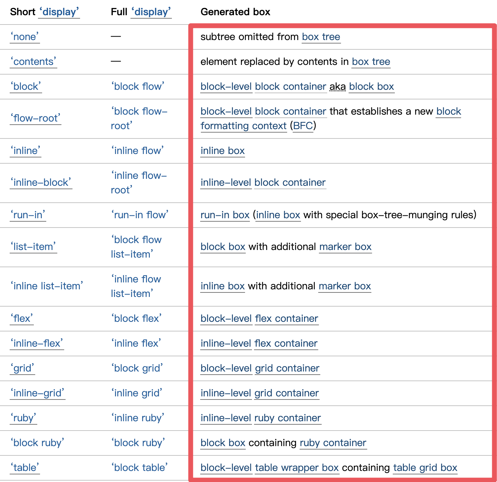
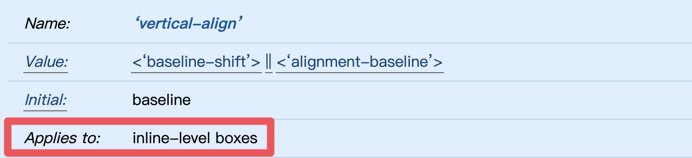

<!DOCTYPE html>
<html  lang="zh">

<head>
    <!-- Global site tag (gtag.js) - Google Analytics -->
    <script async src="https://www.googletagmanager.com/gtag/js?id=UA-156413844-3"></script>
    <script>
        window.dataLayer = window.dataLayer || [];

        function gtag() {
            dataLayer.push(arguments);
        }
        gtag('js', new Date());

        gtag('config', 'UA-156413844-3');
    </script>
    <meta charset="utf-8" />

<meta name="generator" content="Hexo 4.2.0" />

<meta name="viewport" content="width=device-width, initial-scale=1, maximum-scale=1" />

<title>CSS 原理 - 你所不知道的 display - yachen</title>


    <meta name="description" content="Visual formatting model (視覺格式化模型) 對於排版來說是很重要的觀念，但不是那麼平易近人且有點抽象，在初次看 W3C 規範 時一定是霧煞煞，強烈建議先釐清幾個重要名詞的定義，會發現繞來繞去，講的其實都是相同的概念。">
<meta property="og:type" content="article">
<meta property="og:title" content="CSS 原理 - 你所不知道的 display">
<meta property="og:url" content="https://yachen168.github.io/article/display.html">
<meta property="og:site_name" content="yachen">
<meta property="og:description" content="Visual formatting model (視覺格式化模型) 對於排版來說是很重要的觀念，但不是那麼平易近人且有點抽象，在初次看 W3C 規範 時一定是霧煞煞，強烈建議先釐清幾個重要名詞的定義，會發現繞來繞去，講的其實都是相同的概念。">
<meta property="og:image" content="https://yachen168.github.io/images/cover-css.png">
<meta property="article:published_time" content="2020-02-15T08:48:59.000Z">
<meta property="article:modified_time" content="2020-06-04T10:09:15.083Z">
<meta property="article:author" content="yachen">
<meta property="article:tag" content="CSS">
<meta property="article:tag" content="w3HexSchool">
<meta name="twitter:card" content="summary">
<meta name="twitter:image" content="https://yachen168.github.io/images/cover-css.png">


<link rel="icon" href="/../source/images/avatar.png">


<link rel="stylesheet" href="https://cdn.jsdelivr.net/npm/bulma@0.7.2/css/bulma.css">
<link rel="stylesheet" href="https://use.fontawesome.com/releases/v5.4.1/css/all.css">
<link rel="stylesheet" href="https://fonts.googleapis.com/css?family=Ubuntu:400,600|Source+Code+Pro">
<link rel="stylesheet" href="https://cdn.jsdelivr.net/npm/highlight.js@9.12.0/styles/atom-one-light.css">


    
    
<style>body>.footer,body>.navbar,body>.section{opacity:0}</style>

    
    
<link rel="stylesheet" href="https://cdn.jsdelivr.net/npm/lightgallery@1.6.8/dist/css/lightgallery.min.css">
<link rel="stylesheet" href="https://cdn.jsdelivr.net/npm/justifiedGallery@3.7.0/dist/css/justifiedGallery.min.css">

    
    
<link rel="stylesheet" href="https://cdn.jsdelivr.net/npm/outdatedbrowser@1.1.5/outdatedbrowser/outdatedbrowser.min.css">

    
    
    
    
<link rel="stylesheet" href="/css/back-to-top.css">

    
    
    
    
    
    
    
    <link rel="stylesheet" href="/css/progressbar.css">
<script src="https://cdn.jsdelivr.net/npm/pace-js@1.0.2/pace.min.js"></script>
    
    
    


<link rel="stylesheet" href="/css/style.css">

<link rel="alternate" href="/atom.xml" title="yachen" type="application/atom+xml">
</head>

<body class="is-2-column">
    <nav class="navbar navbar-main">
    <div class="container">
        <div class="navbar-brand is-flex-center">
            <a class="navbar-item navbar-logo" href="/">
            
                
            
            </a>
        </div>
        <div class="navbar-menu">
            
            <div class="navbar-start">
                
                <a class="navbar-item"
                href="/">Home</a>
                
                <a class="navbar-item"
                href="/archives">Archives</a>
                
                <a class="navbar-item"
                href="/categories">Categories</a>
                
                <a class="navbar-item"
                href="/tags">Tags</a>
                
            </div>
            
            <div class="navbar-end">
                
                    
                    <a class="navbar-item" target="_blank" rel="noopener" title="Download on GitHub" href="https://github.com/yachen168">
                        
                        <i class="fab fa-github"></i>
                        
                    </a>
                    
                
                
                <a class="navbar-item is-hidden-tablet catalogue" title="catalogue" href="javascript:;">
                    <i class="fas fa-list-ul"></i>
                </a>
                
                
                <a class="navbar-item search" title="Suche" href="javascript:;">
                    <i class="fas fa-search"></i>
                </a>
                
            </div>
        </div>
    </div>
</nav>
        
            <section class="section">
                <div class="container">
                    <div class="columns">
                        <div class="column is-8-tablet is-8-desktop is-8-widescreen has-order-2 column-main">
                            
<div class="card">
    
    <div class="card-image">
        <span  class="image is-7by1">
            
        </span>
    </div>
    
    <div class="card-content article ">
        
        <div class="level article-meta is-size-7 is-uppercase is-mobile is-overflow-x-auto">
            <div class="level-left">
                <time class="level-item has-text-grey" datetime="2020-02-15T08:48:59.000Z">2020-02-15</time>
                
                <div class="level-item">
                <a class="has-link-grey -link" href="/categories/web/">web</a>
                </div>
                
                
                <span class="level-item has-text-grey">
                    
                    
                    9 minutes read (Acerca de 1334 words)
                </span>
                
                
            </div>
        </div>
        
        <h1 class="title is-size-3 is-size-4-mobile has-text-weight-normal">
            
                CSS 原理 - 你所不知道的 display
            
        </h1>
        <div class="content">
            <p>Visual formatting model (視覺格式化模型) 對於排版來說是很重要的觀念，但不是那麼平易近人且有點抽象，在初次看 <a href="https://www.w3.org/TR/CSS2/visuren.html">W3C 規範</a> 時一定是霧煞煞，強烈建議先釐清幾個重要名詞的定義，會發現繞來繞去，講的其實都是相同的概念。</p>
<a id="more"></a>
<h2 id="display"><a class="header-anchor" href="#display"></a>display</h2>
<p>為什麼 display: block 的元素們會呈現垂直排列？為什麼 display: inline 的元素們會呈現水平排列？又為什麼 display: inline-block 的元素是呈現水平排列呢？其實答案都與元素生成(generate)何種類型的 box 有關。<br>
<br></p>
<p>在先前 <a href="https://yachen168.github.io/article/box-model.html">box model 文章</a>中曾介紹，元素就像一個個的盒子 (box)，這篇將介紹在 in flow 下，這些「 盒子如何排列」，或說是「<code>元素如何佈局</code>」。</p>
<p>元素在 in flow 下如何佈局的主要關鍵為該元素「生成 (generate)了什麼類型的 box」，而這會取決於元素的 <code>display 屬性</code>。其實我們所熟悉的 display 同時定義了元素的兩種 display type：</p>
<ul>
<li>
<p><strong>outer display type</strong>：決定元素「<code>本身</code>」在 in flow 下如何佈局，即元素本身<code>參與</code>的是何種 formatting context (格式化上下文)。<br>
<br></p>
</li>
<li>
<p><strong>inner display type</strong>：決定元素為它的後裔元素<code>建立</code>何種 formatting context，與其<code>後裔元素的佈局</code>有關。<br>
<br></p>
</li>
</ul>
<h3 id="outer-display-type"><a class="header-anchor" href="#outer-display-type"></a>outer display type</h3>
<p>在 outer display type 方面，box 類型可分成 <code>inline-level box</code> 與 <code>block-level box</code> 兩大類，所有 inline-level box 皆會<code>參與 IFC</code>，呈現<code>水平</code>排列，而所有 block-level box 皆會<code>參與 BFC</code>，呈現<code>垂直</code>排列。</p>
<ul>
<li>
<p><strong>inline-level box (行內級盒子)</strong></p>
<ul>
<li>
<p>inline box (行內盒子)</p>
</li>
<li>
<p>atomic inline-level box (原子行內級盒)<br>
<br></p>
</li>
</ul>
</li>
<li>
<p><strong>block-level box (塊級盒子)</strong><br>
<br></p>
</li>
</ul>
<h3 id="inner-display-type"><a class="header-anchor" href="#inner-display-type"></a>inner display type</h3>
<p>在 inner display type 方面，因其描述的是元素本身與其內容或後裔元素的關係，可以想像成元素像個容器 (container)，裝著文字內容或後裔元素。常見的 container box 類型有 block container box、flex container box 與 grid container box 等等。</p>
<p>而什麼類型的 container box，就會為其內容或後裔元素<code>建立</code>什麼類型的 formatting context，例如：</p>
<ul>
<li>
<p>flex container 建立 flex formatting context (FFC)</p>
</li>
<li>
<p>grid container 建立 grid formatting context (GFC)</p>
</li>
<li>
<p>block container 可建立 block formatting context (BFC) 或 inline formatting context (IFC)</p>
</li>
</ul>
<p>順帶一提，替換元素 (replaced element)，例如 &lt;img&gt;，display 的預設值為 inline，不論將其 display 屬性值改成什麼，皆不會有 container box，因為它就是路徑來源的圖片，不是用來裝像是 &lt;span&gt;、&lt;div&gt; 或其他元素的容器。</p>
<p><br>
圖片來源: <a href="https://www.w3.org/TR/css-display-3/#the-display-properties">W3C</a></p>
<br>
<br>
<h2 id="了解-display-的好處"><a class="header-anchor" href="#了解-display-的好處"></a>了解 display 的好處</h2>
<p>講了這麼多，了解 display 到底有什麼好處？<br>
個人認為至少有三大優點。</p>
<h3 id="秒殺元素排列方式"><a class="header-anchor" href="#秒殺元素排列方式"></a>秒殺元素排列方式</h3>
<p>即使遇到一個從來沒用過的 display 屬性值，也能夠馬上知道在 in flow 下，元素會<code>如何排列</code>，例如，你有聽過或用過 display: flow-root 或 inline-flex 嗎？</p>
<p>在沒有用過，甚至從沒聽過的情況下，一看 display 表就可以得知 display: flow-root 的元素會生成 block-level box，故元素本身參與 BFC，在 in flow 下會呈現垂直排列。而 display: inline-flex 會生成 inline-level box，故元素本身參與 IFC，在 in flow 下會呈現水平排列。<br>
<br></p>
<h3 id="秒殺屬性的適用對象"><a class="header-anchor" href="#秒殺屬性的適用對象"></a>秒殺屬性的適用對象</h3>
<p>例如常用的 vertical-align 與 text-align 對齊，你知道他們能操控的對象總共有哪些嗎？<br>
其實他們是在操控 <code>inline-level</code> 的垂直與水平對齊。</p>
<p>vertical-align 屬性可以適用於所有 inline-level boxes，也就是可以操控 display 表上所有會生成 inline-level box 元素的垂直對齊。</p>
<p><br>
圖片來源：<a href="https://www.w3.org/TR/css-inline-3/#propdef-vertical-align">W3C</a></p>
<p>而 text-align 的屬性則是須設定在 inline-level 外層的 block container，它可操控 display 表上所有會生成 inline-level box 元素的水平對齊。</p>
<p><br>
圖片來源：<a href="https://www.w3.org/TR/css-text-3/#justification">W3C</a></p>
<br>
<p>再例如，margin: 0 auto，常用在 display: block 元素的水平置中，但除此之外，還可以用在哪些元素上呢？</p>
<p>其實 display 表上會生成 block-level box 的皆適用。<br>
<br></p>
<h3 id="何種-display-會產生-BFC"><a class="header-anchor" href="#何種-display-會產生-BFC"></a>何種 display 會產生 BFC</h3>
<p>就如同剛剛提及的，什麼類型的 container box 就會<code>建立</code>什麼類型的 formatting context，所以 block container box 可以建立 BFC，這時就可以由 dispaly 表中得知 display: inline-block 與 flow-root 皆會建立 BFC (display: block 例外)。</p>
<p>另外，其實 display: table 與 inline-table 亦會建立 BFC，因生成的 <a href="https://drafts.csswg.org/css-tables-3/#table-wrapper-box">table wrapper box</a> 也是一種 block container。</p>
<p>block formatting context (BFC) 在排版中是非常重要的一環，這部分的介紹留在之後文章再詳細說明。</p>
<br>
<br>
<br>
<br>
<p>參考資源</p>
<ol>
<li><a href="https://www.w3.org/TR/CSS22/visuren.html">W3C-Controlling box generation</a></li>
<li><a href="https://www.w3.org/TR/css-display-3/#glossary">W3C-Appendix A: Glossary</a></li>
<li><a href="https://www.w3.org/TR/css-display-3/#the-display-properties">W3C-Box Layout Modes: the display property</a></li>
</ol>

        </div>
        
        <div class="level is-size-7 is-uppercase">
            <div class="level-start">
                <div class="level-item">
                    <span class="is-size-6 has-text-grey has-mr-7">#</span>
                    <a class="has-link-grey -link" href="/tags/CSS/" rel="tag">CSS</a>, <a class="has-link-grey -link" href="/tags/w3HexSchool/" rel="tag">w3HexSchool</a>
                </div>
            </div>
        </div>
        
        
        
    </div>
</div>


<div class="card card-transparent">
    <div class="level post-navigation is-flex-wrap is-mobile">
        
        <div class="level-start">
            <a class="level level-item has-link-grey  article-nav-prev" href="/article/LineBox.html">
                <i class="level-item fas fa-chevron-left"></i>
                <span class="level-item">CSS 原理 - Line box</span>
            </a>
        </div>
        
        
        <div class="level-end">
            <a class="level level-item has-link-grey  article-nav-next" href="/article/Collapsing-margins.html">
                <span class="level-item">CSS 原理 - Collapsing margins</span>
                <i class="level-item fas fa-chevron-right"></i>
            </a>
        </div>
        
    </div>
</div>


<div class="card">
    <div class="card-content">
        <h3 class="title is-5 has-text-weight-normal">comments</h3>
        
<div id="comment-container"></div>
<link rel="stylesheet" href="https://cdn.jsdelivr.net/npm/gitalk@1.4.1/dist/gitalk.css">
<script src="https://cdn.jsdelivr.net/npm/gitalk@1.4.1/dist/gitalk.min.js"></script>
<script>
    var gitalk = new Gitalk({
        clientID: '55257ba0d3e214c6eb38',
        clientSecret: '2655b53e34f22f8e80ba21478704ab5b7a908bfb',
        id: '2f9e21da183513330090b5c29b8e8b0b',
        repo: 'yachen168.github.io',
        owner: 'yachen168',
        admin: "yachen168",
        createIssueManually: false,
        distractionFreeMode: false
    })
    gitalk.render('comment-container')
</script>

    </div>
</div>

                        </div>
                        


<div class="column is-4-tablet is-4-desktop is-4-widescreen  has-order-1 column-left ">
    
        
<div class="card widget">
    <div class="card-content">
        <nav class="level">
            <div class="level-item has-text-centered" style="flex-shrink: 1">
                <div>
                    
                    <figure class="image is-128x128 has-mb-6">
                        
                    </figure>
                    
                    <p class="is-size-4 is-block">
                        yachen
                    </p>
                    
                    
                    
                    <p class="is-size-6 is-flex is-flex-center has-text-grey">
                        <i class="fas fa-map-marker-alt has-mr-7"></i>
                        <span>Taiwan</span>
                    </p>
                    
                </div>
            </div>
        </nav>
        <nav class="level is-mobile">
            <div class="level-item has-text-centered is-marginless">
                <div>
                    <p class="heading">
                        Posts
                    </p>
                    <a href="/archives">
                        <p class="title has-text-weight-normal">
                            21
                        </p>
                    </a>
                </div>
            </div>
            <div class="level-item has-text-centered is-marginless">
                <div>
                    <p class="heading">
                        Categorien
                    </p>
                    <a href="/categories">
                        <p class="title has-text-weight-normal">
                            3
                        </p>
                    </a>
                </div>
            </div>
            <div class="level-item has-text-centered is-marginless">
                <div>
                    <p class="heading">
                        Tags
                    </p>
                    <a href="/tags">
                        <p class="title has-text-weight-normal">
                            12
                        </p>
                    </a>
                </div>
            </div>
        </nav>
        
        <div class="level">
            <a class="level-item button is-link is-rounded" href="https://github.com/yachen168" target="_blank" rel="noopener">
                Follow</a>
        </div>
        
        
        
        <div class="level is-mobile">
            
            <a class="level-item button is-white is-marginless" target="_blank" rel="noopener"
                title="Github" href="https://github.com/yachen168">
                
                <i class="fab fa-github"></i>
                
            </a>
            
            <a class="level-item button is-white is-marginless" target="_blank" rel="noopener"
                title="Facebook" href="https://www.facebook.com/profile.php?id=100001269953108">
                
                <i class="fab fa-facebook"></i>
                
            </a>
            
        </div>
        
    </div>
</div>
    
        

    <div class="card widget" id="toc">
        <div class="card-content">
            <div class="menu">
                <h3 class="menu-label">
                    catalogue
                </h3>
                <ul class="menu-list"><li>
        <a class="is-flex" href="#display">
        <span class="has-mr-6">1</span>
        <span>display</span>
        </a><ul class="menu-list"><li>
        <a class="is-flex" href="#outer-display-type">
        <span class="has-mr-6">1.1</span>
        <span>outer display type</span>
        </a></li><li>
        <a class="is-flex" href="#inner-display-type">
        <span class="has-mr-6">1.2</span>
        <span>inner display type</span>
        </a></li></ul></li><li>
        <a class="is-flex" href="#了解-display-的好處">
        <span class="has-mr-6">2</span>
        <span>了解 display 的好處</span>
        </a><ul class="menu-list"><li>
        <a class="is-flex" href="#秒殺元素排列方式">
        <span class="has-mr-6">2.1</span>
        <span>秒殺元素排列方式</span>
        </a></li><li>
        <a class="is-flex" href="#秒殺屬性的適用對象">
        <span class="has-mr-6">2.2</span>
        <span>秒殺屬性的適用對象</span>
        </a></li><li>
        <a class="is-flex" href="#何種-display-會產生-BFC">
        <span class="has-mr-6">2.3</span>
        <span>何種 display 會產生 BFC</span>
        </a></li></ul></li></ul>
            </div>
        </div>
    </div>

    
        <div class="card widget">
    <div class="card-content">
        <h3 class="menu-label">
            Recent Posts
        </h3>
        
        <article class="media">
            
            <a href="/article/pr-mdn.html" class="media-left">
                <p class="image is-64x64">
                    
                </p>
            </a>
            
            <div class="media-content">
                <div class="content">
                    <div><time class="has-text-grey is-size-7 is-uppercase" datetime="2022-05-21T03:50:38.000Z">2022-05-21</time></div>
                    <a href="/article/pr-mdn.html" class="title has-link-black-ter is-size-6 has-text-weight-normal">一起成為 MDN 的貢獻者吧!</a>
                    <p class="is-size-7 is-uppercase">
                        <a class="has-link-grey -link" href="/categories/developer/">developer</a>
                    </p>
                </div>
            </div>
        </article>
        
        <article class="media">
            
            <a href="/article/rn-apk.html" class="media-left">
                <p class="image is-64x64">
                    
                </p>
            </a>
            
            <div class="media-content">
                <div class="content">
                    <div><time class="has-text-grey is-size-7 is-uppercase" datetime="2021-07-24T16:48:48.000Z">2021-07-25</time></div>
                    <a href="/article/rn-apk.html" class="title has-link-black-ter is-size-6 has-text-weight-normal">React Native - 打包 AAB(APK)</a>
                    <p class="is-size-7 is-uppercase">
                        <a class="has-link-grey -link" href="/categories/App/">App</a>
                    </p>
                </div>
            </div>
        </article>
        
        <article class="media">
            
            <a href="/article/rn-hello-world.html" class="media-left">
                <p class="image is-64x64">
                    
                </p>
            </a>
            
            <div class="media-content">
                <div class="content">
                    <div><time class="has-text-grey is-size-7 is-uppercase" datetime="2021-07-24T13:30:48.000Z">2021-07-24</time></div>
                    <a href="/article/rn-hello-world.html" class="title has-link-black-ter is-size-6 has-text-weight-normal">React Native 開發環境建置 - Android 篇(下)</a>
                    <p class="is-size-7 is-uppercase">
                        <a class="has-link-grey -link" href="/categories/App/">App</a>
                    </p>
                </div>
            </div>
        </article>
        
        <article class="media">
            
            <a href="/article/rn-environment-android.html" class="media-left">
                <p class="image is-64x64">
                    
                </p>
            </a>
            
            <div class="media-content">
                <div class="content">
                    <div><time class="has-text-grey is-size-7 is-uppercase" datetime="2021-07-24T08:48:48.000Z">2021-07-24</time></div>
                    <a href="/article/rn-environment-android.html" class="title has-link-black-ter is-size-6 has-text-weight-normal">React Native 開發環境建置 - Android 篇(上)</a>
                    <p class="is-size-7 is-uppercase">
                        <a class="has-link-grey -link" href="/categories/App/">App</a>
                    </p>
                </div>
            </div>
        </article>
        
        <article class="media">
            
            <a href="/article/composition-api-teleport.html" class="media-left">
                <p class="image is-64x64">
                    
                </p>
            </a>
            
            <div class="media-content">
                <div class="content">
                    <div><time class="has-text-grey is-size-7 is-uppercase" datetime="2021-01-24T12:40:37.000Z">2021-01-24</time></div>
                    <a href="/article/composition-api-teleport.html" class="title has-link-black-ter is-size-6 has-text-weight-normal">Vue3 Composition API - Teleport 瞬移!</a>
                    <p class="is-size-7 is-uppercase">
                        <a class="has-link-grey -link" href="/categories/web/">web</a>
                    </p>
                </div>
            </div>
        </article>
        
    </div>
</div>
    
    
        <div class="column-right-shadow is-hidden-widescreen ">
        
        </div>
    
</div>

                            
                    </div>
                </div>
            </section>
            <footer class="footer">
    <div class="container">
        <div class="level">
            <div class="level-start has-text-centered-mobile">
                <!-- <a class="footer-logo is-block has-mb-6" href="/">
                
                    
                
                </a> -->
                <p class="is-size-7">
                    &copy;
                    2022
                        yachen&nbsp; <br>Powered by <a href="https://hexo.io/" target="_blank" rel="noopener">Hexo</a> & <a href="https://github.com/ppoffice/hexo-theme-icarus" target="_blank" rel="noopener">Icarus</a>
                            
                </p>
            </div>
            <div class="level-end">
                
            </div>
        </div>
    </div>
</footer>
                <script src="https://cdn.jsdelivr.net/npm/jquery@3.3.1/dist/jquery.min.js"></script>
<script src="https://cdn.jsdelivr.net/npm/moment@2.22.2/min/moment-with-locales.min.js"></script>
<script>moment.locale("zh-Hant");</script>


<script>
var IcarusThemeSettings = {
    site: {
        url: 'https://yachen168.github.io',
        external_link: {"enable":true,"exclude":[]}
    },
    article: {
        highlight: {
            clipboard: true,
            fold: 'unfolded'
        }
    }
};
</script>


<script src="https://cdn.jsdelivr.net/npm/clipboard@2.0.4/dist/clipboard.min.js" defer></script>


<script src="/js/animation.js"></script>


<script src="https://cdn.jsdelivr.net/npm/lightgallery@1.6.8/dist/js/lightgallery.min.js" defer></script>
<script src="https://cdn.jsdelivr.net/npm/justifiedGallery@3.7.0/dist/js/jquery.justifiedGallery.min.js" defer></script>
<script src="/js/gallery.js" defer></script>


<div id="outdated">
    <h6>Your browser is out-of-date!</h6>
    <p>Update your browser to view this website correctly. <a id="btnUpdateBrowser" href="http://outdatedbrowser.com/">Update
            my browser now </a></p>
    <p class="last"><a href="#" id="btnCloseUpdateBrowser" title="Close">&times;</a></p>
</div>
<script src="https://cdn.jsdelivr.net/npm/outdatedbrowser@1.1.5/outdatedbrowser/outdatedbrowser.min.js" defer></script>
<script>
    document.addEventListener("DOMContentLoaded", function () {
        outdatedBrowser({
            bgColor: '#f25648',
            color: '#ffffff',
            lowerThan: 'flex'
        });
    });
</script>


<script src="https://cdn.jsdelivr.net/npm/mathjax@2.7.5/unpacked/MathJax.js?config=TeX-MML-AM_CHTML" defer></script>
<script>
document.addEventListener('DOMContentLoaded', function () {
    MathJax.Hub.Config({
        'HTML-CSS': {
            matchFontHeight: false
        },
        SVG: {
            matchFontHeight: false
        },
        CommonHTML: {
            matchFontHeight: false
        },
        tex2jax: {
            inlineMath: [
                ['$','$'],
                ['\\(','\\)']
            ]
        }
    });
});
</script>


<a id="back-to-top" title="Zurück nach oben" href="javascript:;">
    <i class="fas fa-chevron-up"></i>
</a>
<script src="/js/back-to-top.js" defer></script>


<script src="/js/main.js" defer></script>

                    
                        <div class="searchbox ins-search">
    <div class="searchbox-container ins-search-container">
        <div class="searchbox-input-wrapper">
            <input type="text" class="searchbox-input ins-search-input" placeholder="Tippen Sie etwas..." />
            <span class="searchbox-close ins-close ins-selectable"><i class="fa fa-times-circle"></i></span>
        </div>
        <div class="searchbox-result-wrapper ins-section-wrapper">
            <div class="ins-section-container"></div>
        </div>
    </div>
</div>
<script>
    (function (window) {
        var INSIGHT_CONFIG = {
            TRANSLATION: {
                POSTS: 'Posts',
                PAGES: 'Seiten',
                CATEGORIES: 'categories',
                TAGS: 'Tags',
                UNTITLED: '(Unbenannt)',
            },
            CONTENT_URL: '/content.json',
        };
        window.INSIGHT_CONFIG = INSIGHT_CONFIG;
    })(window);
</script>
<script src="/js/insight.js" defer></script>
<link rel="stylesheet" href="/css/search.css">
<link rel="stylesheet" href="/css/insight.css">
                            
</body>

</html>